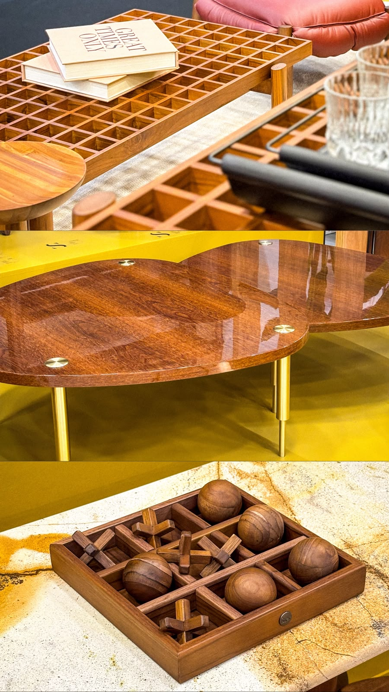
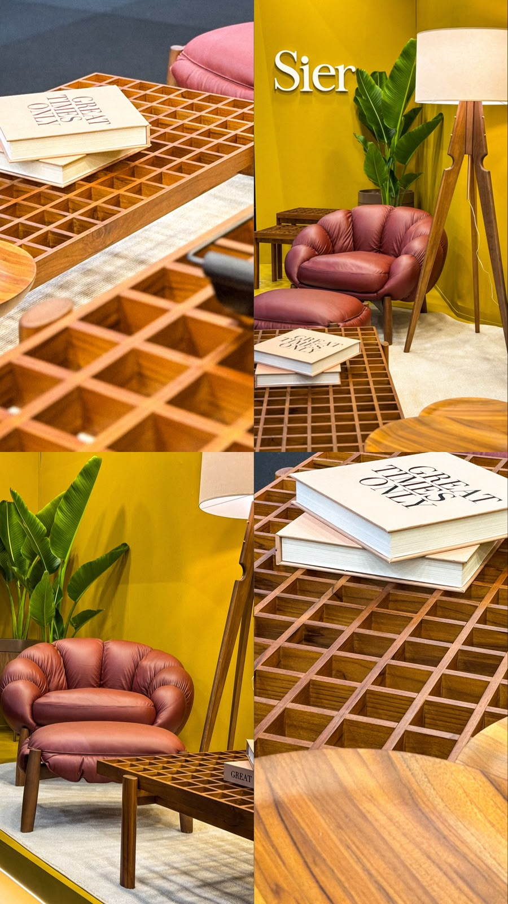
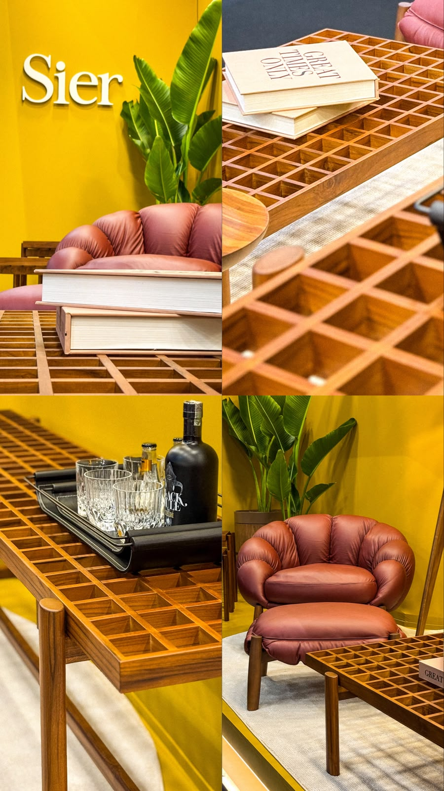
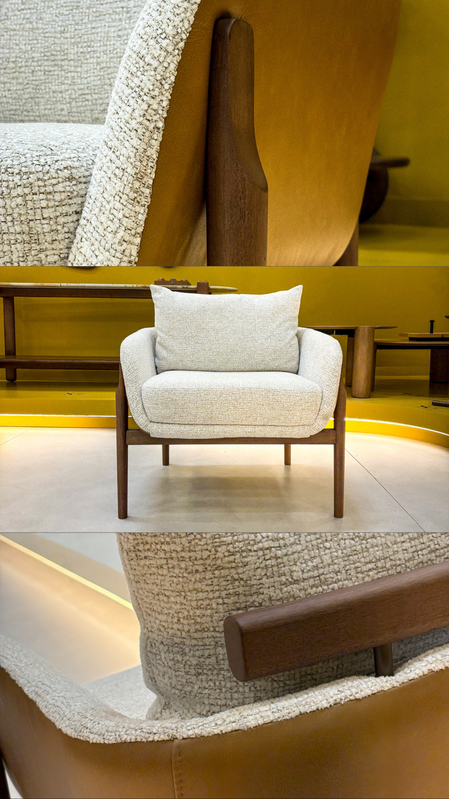
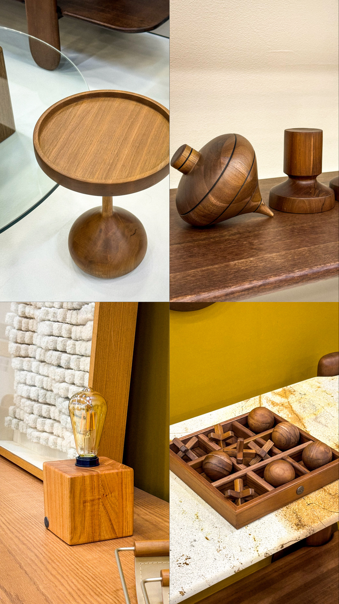
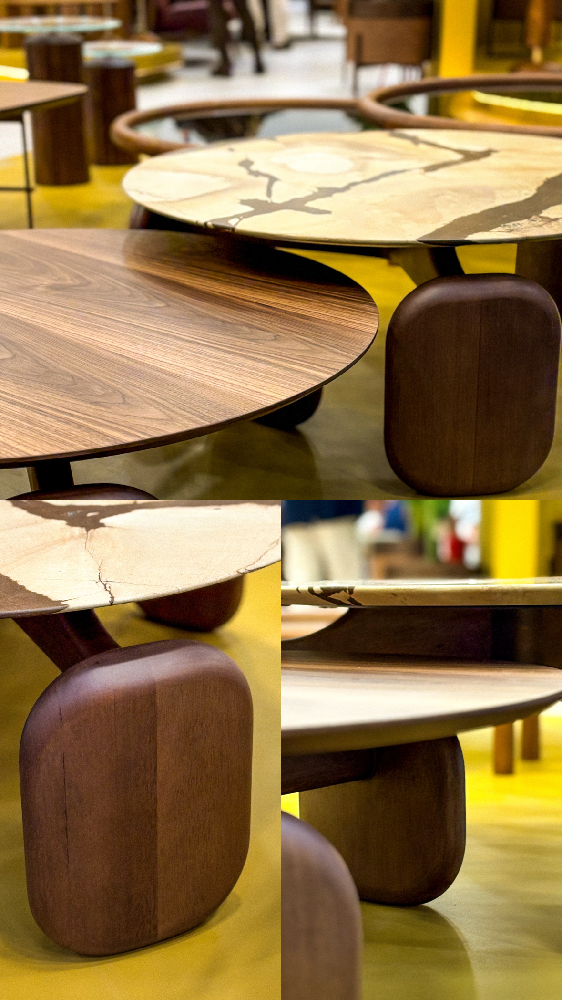
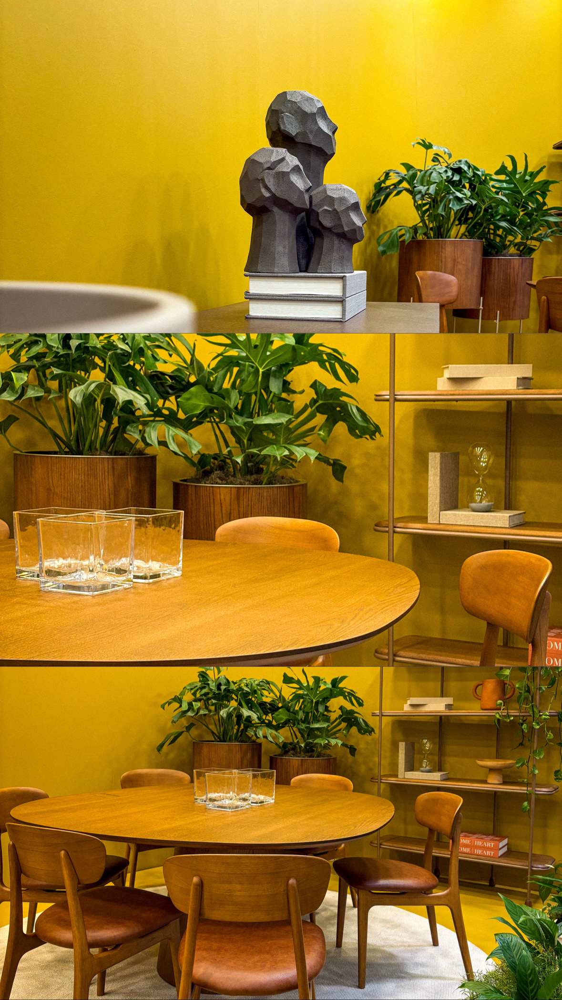
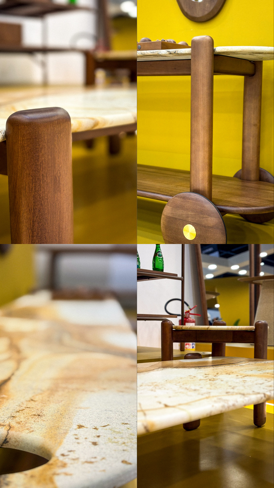
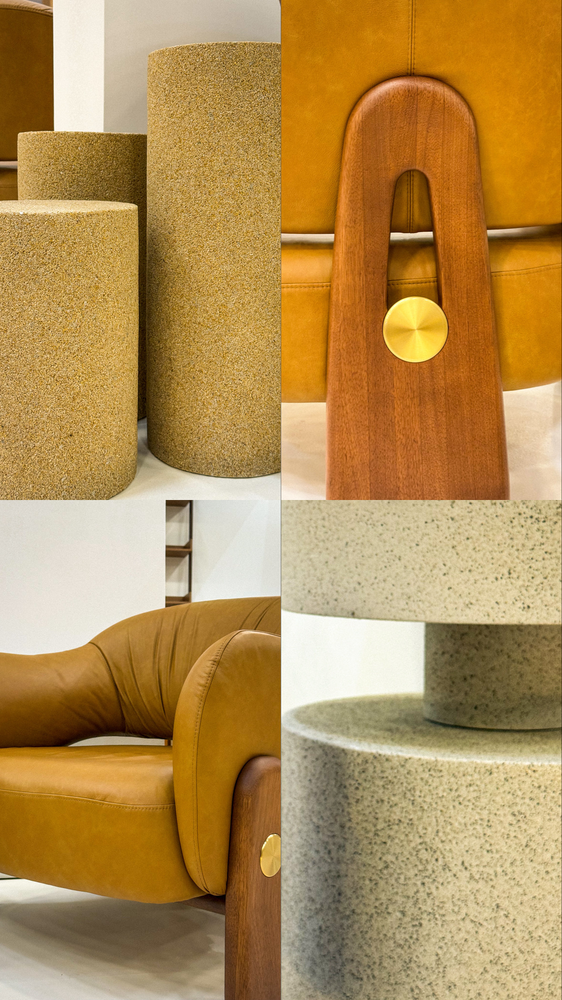
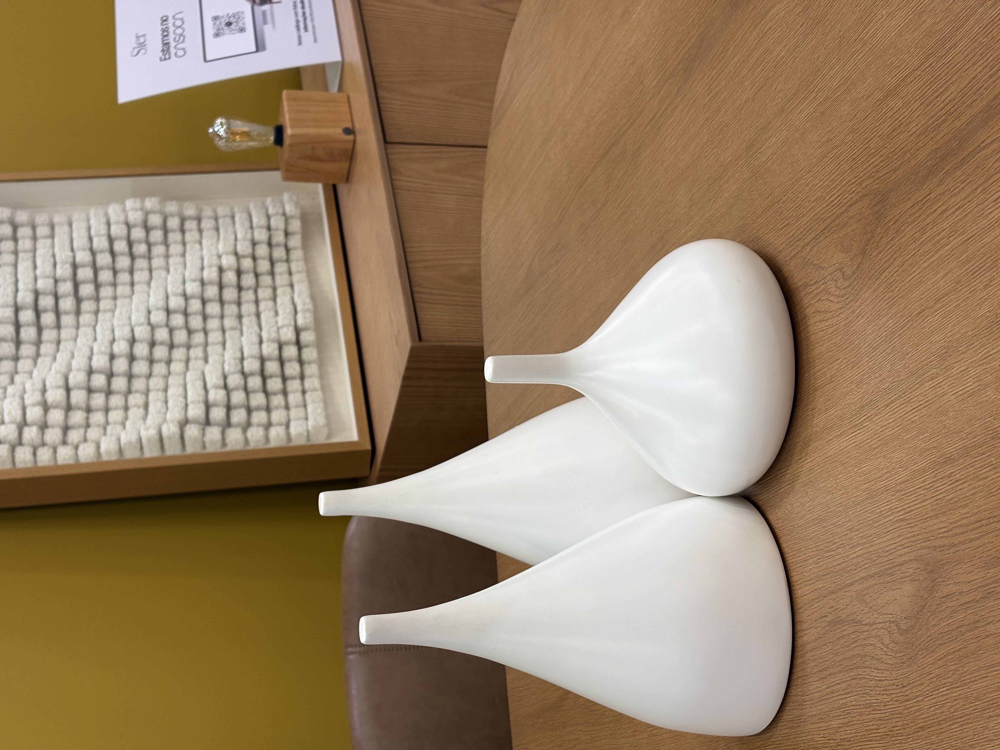

Cronograma de conteúdo
Cobertura ABIMAD · Instagram
Ref. Sier · ABIMAD'42
Cobertura ABIMAD · Instagram
Ref. Sier · ABIMAD'42
Cronograma de postagens da ABIMAD'42.
O que já foi postado e o que ainda falta, dia a dia, até o encerramento em 06/08.
27Total de posts feitos durante a ABIMAD'42
Dia 01 Abertura da feira 03/08
Concluído
- 1 vídeo no FeedRegistro do estande Sier no primeiro dia da feira.
- Stories — AberturaVídeo mostrando a abertura do estande em Stories.
- Stories — EncerramentoFechamento do primeiro dia de exposição, em Stories.
- Sequência de fotos (Stories)3 fotos em grade do estande Sier.



6 posts no total — 1 no Feed, 5 em Stories.
Dia 02 Segundo dia da feira 04/08
Concluído
- 2 vídeos no FeedRegistro do estande Sier no segundo dia da feira.
- Stories — AberturaVídeo mostrando a abertura do estande em Stories.
- Stories — Home designVídeo em Stories.
- Sequência de fotos (Stories)3 fotos em grade do estande Sier.
- Stories — EncerramentoVídeo de fechamento do segundo dia de exposição.



8 posts no total — 2 no Feed, 6 em Stories.
Dia 03 Terceiro dia da feira 05/08
Concluído
- 1 vídeo no FeedRegistro do estande Sier no terceiro dia da feira.
- Stories — AberturaVídeo mostrando a abertura do estande em Stories.
- Sequência de fotos (Stories)3 fotos em grade do estande Sier.
- Stories — EncerramentoVídeo de fechamento do terceiro dia de exposição.



6 posts no total — 1 no Feed, 5 em Stories.
Dia 04 Encerramento da feira 06/08
Concluído
- 1 Reels no Feed — recap finalVídeo de encerramento com a marca ABIMAD'42 · Sier.
- Stories — AberturaVídeo mostrando a abertura do estande em Stories.
- Stories — detalhes (x2)Vídeos com closes das peças em exposição.
- Sequência de fotos (Stories)3 fotos em grade do estande Sier.



7 posts no total — 1 no Feed, 6 em Stories.